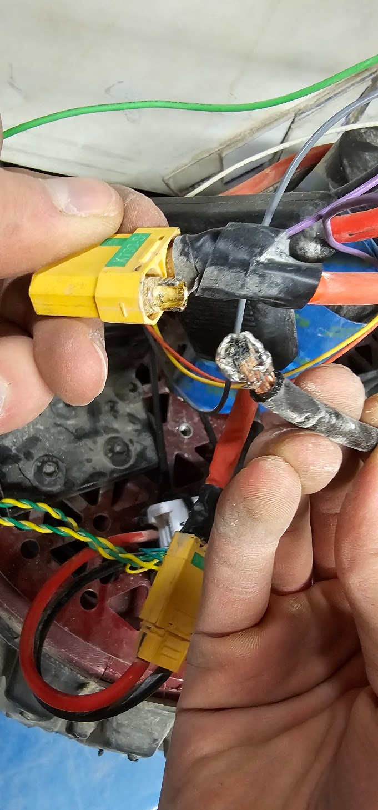

GRIM and REAPER were 2 nearly identical robots build while I was the Software Lead of Astrobotics. We built 2 since there were 2 Lunabotics competitions that year one of which was unofficial and hosted as ISU. REAPER went to UCF and we placed in the top 15 of 50 teams. GRIM went to ISU and AFAIK no truly official rankings were ever posted beyond the top 3 teams.
During the project I served as the Software Lead and additionally was responsible for much of the electrical wiring fixing needed on GRIM.
Specifically, I was responsible for:

Above is one of the many wiring problems that GRIM faced frequently, these failures resulted from poor soldering practices and a lack of strain relief on the xt-90 connectors. For REAPER we elected to use crimped Anderson Powerpole connectors which we had significantly more success with since it was much easier to train members of the team to properly crimp and terminate compared to the xt-90s.

Add any relevant context or lessons learned.